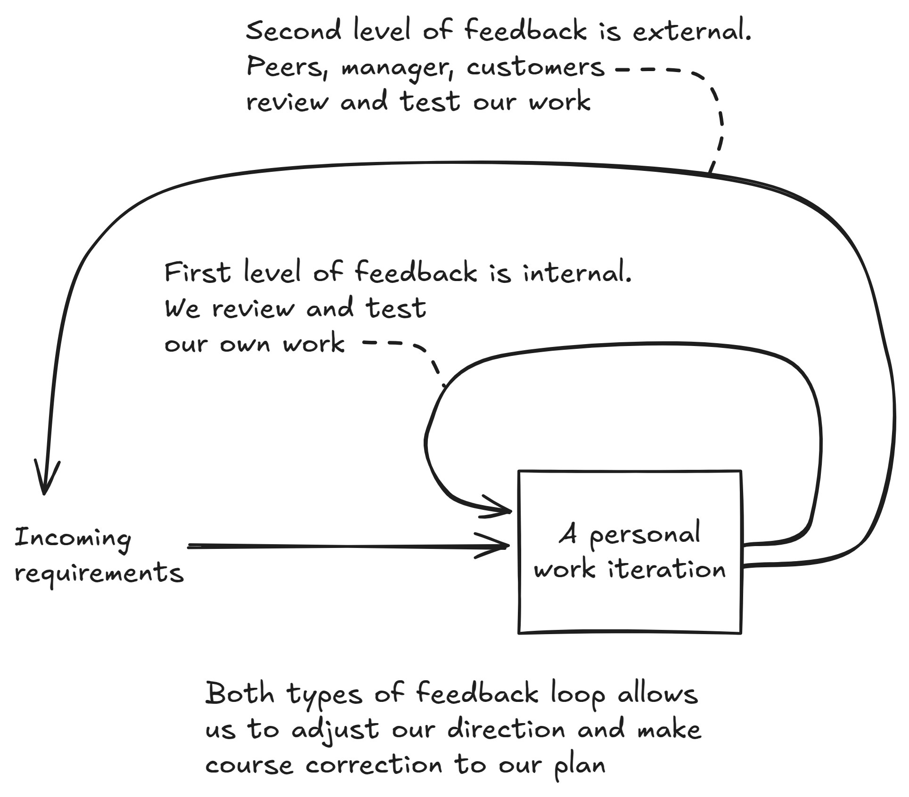
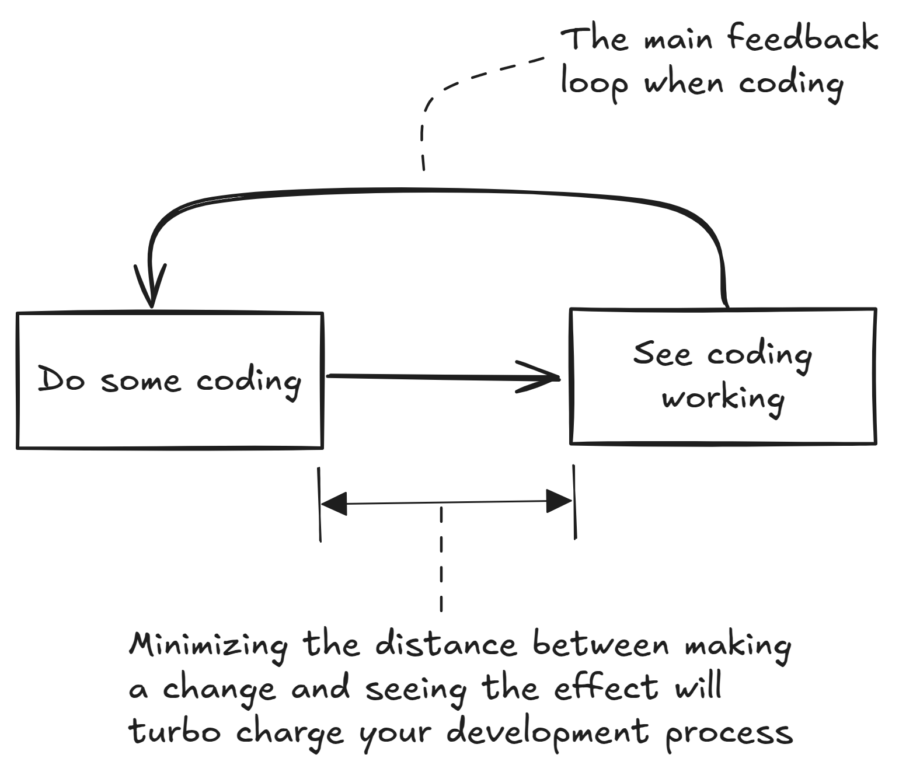
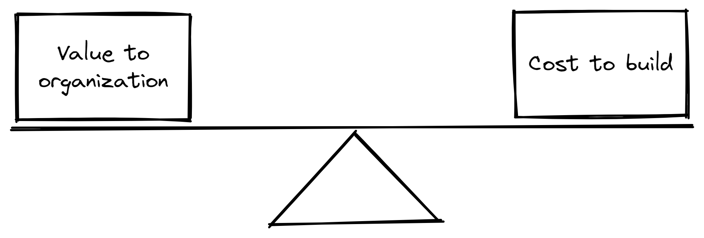
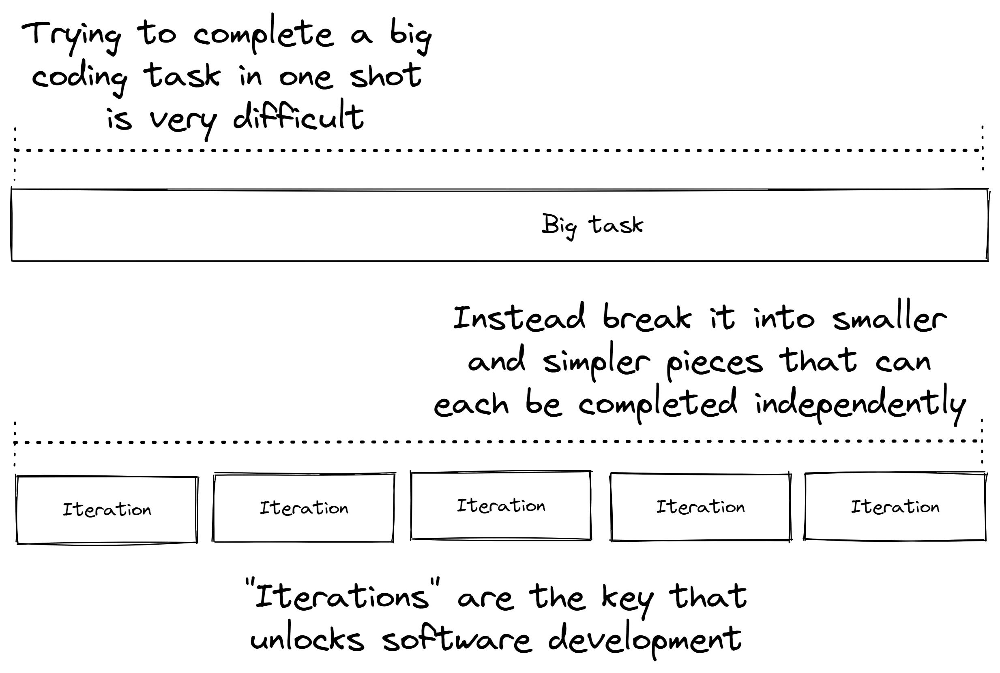
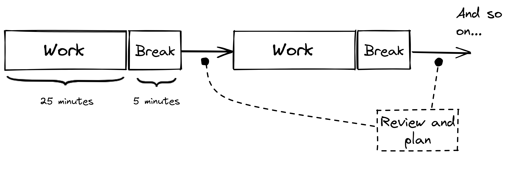
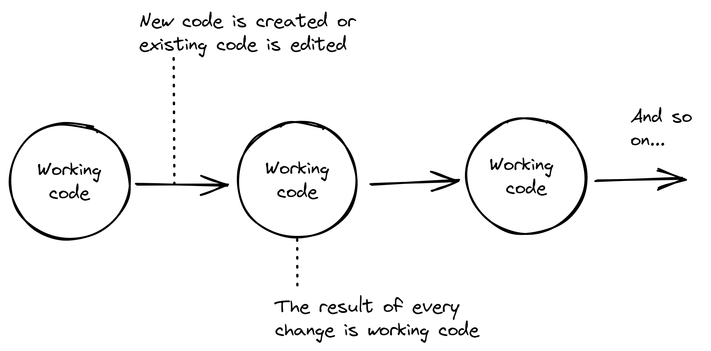
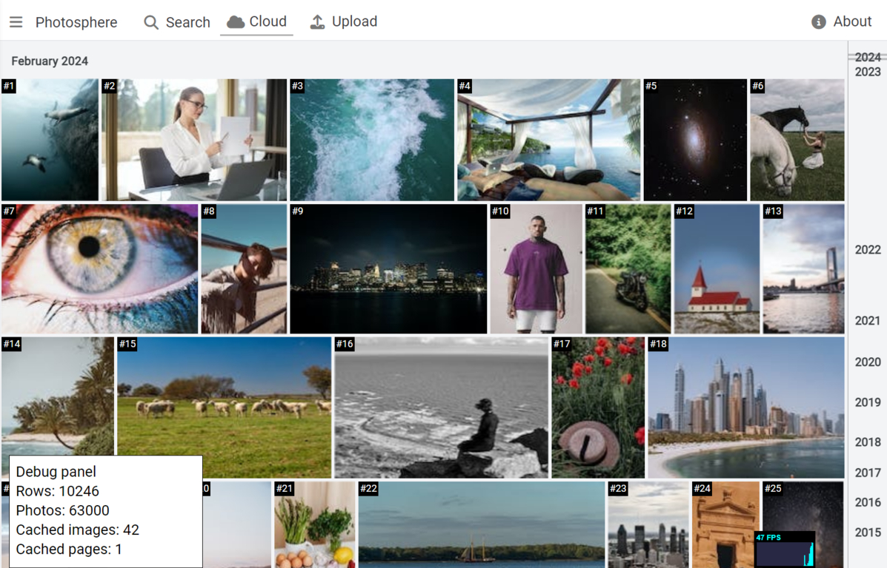
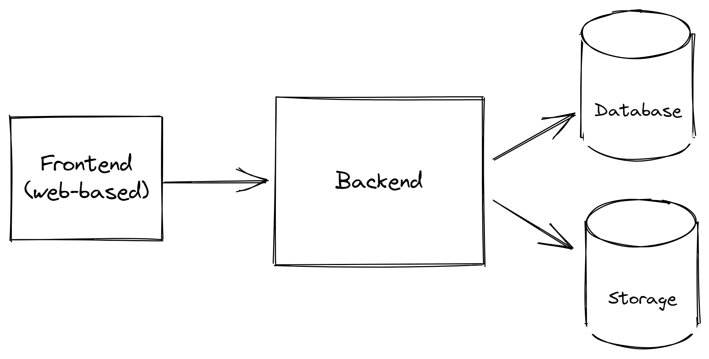
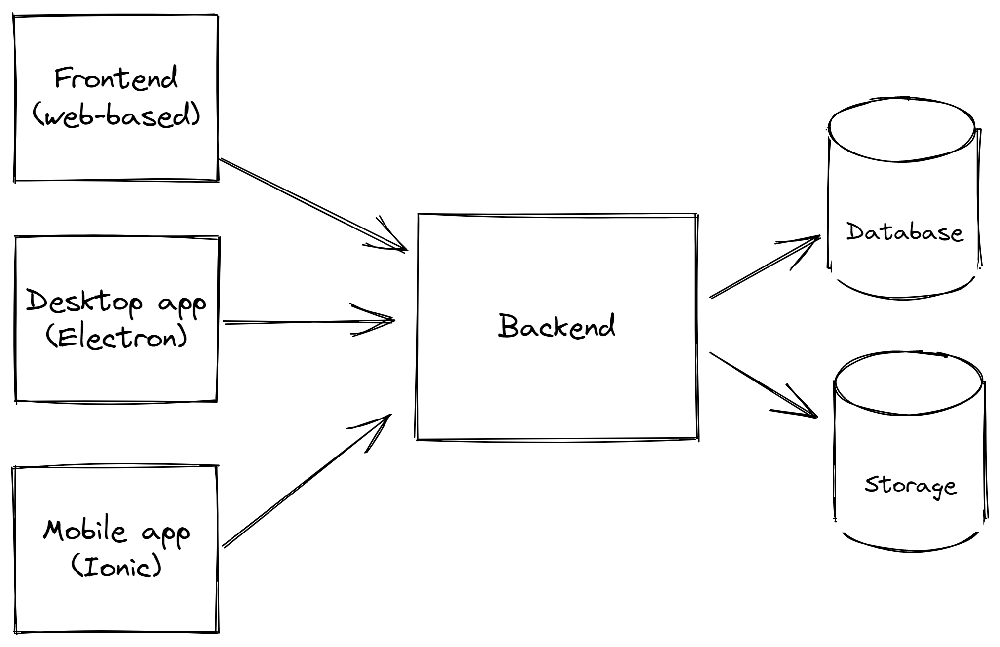

1 Working and valuable: Gearing your process for continuous feedback
In this chapter, you will learn
- A philosophy for effective software development
- Why feedback matters when building software
- About the example application we'll be building in this book
This is a book about delivering software at a rapid pace. But it isn’t just about being a fast coder. By itself being able to write code quickly is not a worthy goal. It’s not even a useful goal.
As a software developer you must be able to produce code that is working, reliable and valuable in a reasonable time frame.
If you can't write code that works, or if you can't write code that's valuable, there's little point being able to write code quickly. The real trick to moving at a rapid pace is to focus on the aspects of development that help you build your code the right way and indeed to make sure that it is the right code.
When we create broken code (it’s so easy to do) we stifle our future progress.
When we create unreliable code (again so easy), for example code that only runs on our computer but doesn’t work in production or doesn’t work on our customers’ devices, that’s code that by definition isn’t going to be useful.
When we travel far writing code in the wrong direction, the work we have done is ultimately wasted (which so often happens).
How do we deliver code that is working, reliable and valuable as quickly as possible? You might have guessed already that the main answer is feedback. We need fast, almost immediate feedback, and we need it continuously through our development process. This book will help you build an effective development process to create working and valuable code, quickly. But we can't do that without building a solid foundation for fast and continuous feedback. In this chapter we start with a theoretical philosophy for software development based on continuous feedback, before spending multiple chapters learning how to put the theory into practice.
1.1 A software developer’s journey
Adopting a feedback-driven approach to creating software helps you achieve your goal of becoming a better developer, indeed a faster developer, one who consistently delivers working, reliable and valuable code, but we’ll do that in the right way.
Well, in truth, there is no single right way to do this and there are many wrong ways. We are all different and there are as many different ways to do software development as there are developers. But some ways work better than others.
We each learn in our own unique way and there is simply no one size fits all solution. Software development is too complicated for that and relies too much on situation, context, judgment and experience. There are many different ways to approach it that can work. There are many different ways to do it, some of which work for some teams but not for others. The thing that makes you a good software developer might very well be different to the thing that works for someone else. So please keep an open mind as you read this book. I’m certain many of the techniques herein will work for you, but there are sure to be some that don’t resonate and some that you will need to adapt to your own personal style.
One thing I know for sure is that goals alone aren’t enough to achieve anything. Goals can’t be fulfilled without having the habits to back them up. Your habits will define you. Create good habits and you will become a consistently good developer. Create bad habits and … well, you get the idea.
You already have the goal of improving yourself as a developer, but you still need some help creating the habits that push you toward that goal. Through this book you will learn principles, practices and techniques that will help you achieve your goals of delivering better and more useful software more quickly. We’ll be building these habits from chapter 2 where we’ll be working through this book's example of feedback-driven development.
This book is for working developers who already know the basics of a programming language and are looking for pathways to a higher level of skill.
To get the most of this book you should be able to:
- Get the gist of simple JavaScript or TypeScript code examples
- Use the command line to create and change directories, run commands, etc.
- Use a text editor or IDE such Visual Studio Code
It will also help if you know the basics of using Git, but it’s not completely necessary because I’ll explain the commands we will use along the way.
If you don’t know JavaScript or TypeScript you can still read this book, but you may need to put in extra effort to make sure you understand the code examples.
In this chapter we start with a lightweight theory of effective software development. After chapter one though we dispense with theory and get into the actual practice of software development supported by continuous feedback. Together we will build an application and you will spend most of the book experiencing the development process.
Generally, our goals are these:
- Create a rapid, but sustainable, pace of development
- Improve our probability of producing working code
- Increase the value of the code we write
- Improve our development cadence: the rate at which we produce code that is working, reliable and valuable.
- Use constant feedback to assess our work and make course corrections towards more effective development and a better product.
This book is accompanied by many working code examples for you to follow along with and a complete non-trivial example application called Photosphere (see figure 1.7 toward the end of this chapter to see how it will eventually look).
This doesn’t work without you trying it for yourself. Only by following along with the coding (starting in Chapter 2) can you really experience it. Then you must apply what you learn to your own development process. Take what works for you, adapt what you can and discard the rest. That’s a winning system that leads you to becoming a more seasoned software developer.
1.2 The fastest way to write code
Before we really get into it, I have a question for you:
What’s the fastest way to write code?
HINT: We can be faster using AI, but that isn't the fastest way to write code.
Think about this question as you read this chapter. I’ll give you my answer soon. It might surprise you!
1.3 Virtues of effective development
Producing reams of code quickly isn’t necessarily productive:
- When the code produced is unreliable and causes problems, it’s counter productive.
- When the code doesn’t meet the needs of the customer, your effort has been partially, and sometimes completely, wasted.
Being able to write code quickly is only a very small part of it. And now that we are using AI the speed of writing code is even less important. As a professional developer it’s best if you can type quickly and without looking at the keyboard. Ongoing effort to master your programming language is time well spent. Being able to “think in code” really does help, but that takes a lot of practice and experience.
You should be pleased to realize that being able to write code quickly was never particularly important for effective software development. Your code also has to work. It has to be reliable. But most importantly your code has to be valuable. If you know how to produce code that is working, reliable and valuable, even slowly, you will already be able to outperform many other developers, many of whom might be outpacing you - but only to produce code that doesn’t meet these criteria.
A good development process encourages these virtues for our code:
- Working
- Reliable
- Valuable
The key to building these virtues into our development practice is feedback:
- How do we know if our code works? We test it. That’s feedback.
- How do we know if our code is valuable and reliable? We should test it in production. We should test it on our customer device. Ultimately we should check in with our customer and ask them how it’s doing. Or better yet, watch our customers using our product. Again that’s feedback.
- How do we know our development process is effective at producing working, reliable and valuable code? We should assess this continuously during development. Yet more feedback.
Many times in this book I will mention our customer. I believe that a customer-focused approach to software development is one of the best ways to ensure that we are committed to building the right thing in the right way - whatever that happens to mean for our given business, project, team or customer.
For many of you reading this, customer will sound like the wrong term to use. So please mentally swap customer with whatever term you feel is the most appropriate proxy for you, for example:
- Your boss, lead developer, project/product manager/owner, department head - When you have no direct access to customers of your product you'll need to identify the relevant proxy to your customer.
- Your colleagues or other teams - If you are a developer providing code and tools for your colleagues to use, then they are your customer!
- Your end-user - sometimes your customer sells your software to their end-user. This situation is more difficult, but still what makes your software valuable to the end-user should generally be what makes it saleable to your customer - although it's often never this simple in real life.
Building good feedback loops into our development process is the best way to make constant course corrections to hone in on better code, better product and better process.
1.4 Feedback-driven development
An effective development process is one that is frequently guided by feedback. You can see in figure 1.1 the two levels of feedback we are dealing with.
The first level is at the internal or personal level where we repeatedly complete personal iterations of work followed by testing and self-review: testing our code, doing thought experiments, conducting real experiments and reviewing our own code for mistakes. The insight gained from this internal feedback allows us to see our mistakes more quickly and plot a better course forward. This is our tightest feedback loop and it directly influences the moment-to-moment direction of software development during our working day. The internal feedback loop operates at a fast pace, giving fast results that quickly feed back and influence the direction of our work. Considering feedback at this level and taking corrective action has the biggest potential to reshape our personal development process to be more effective.
The second level of feedback is at the external level, what you might think of as team-based feedback. This is where we submit our work for evaluation and review to our manager, colleagues (for peer-reviews) and ultimately to our customer who will use the product and features we create. The external level of feedback is necessary but it is much slower-paced. It can take hours, if not days, to get feedback this way. If you are relying on external feedback to improve your personal development process you will find that improvements will come very slowly if they come at all.

An important point I’d like to make is that if you are waiting for external feedback (feedback from your colleagues, manager or customers) to know where to head next or to know how to improve, you will necessarily be moving at a slow pace due to the nature of this kind of feedback.
Whilst we do need external feedback and it's an important, no crucial, part of our jobs to meet the needs of our colleagues, business and customers, by itself we can't create a fast development workflow just using external feedback. There are in fact many things we can do to test, validate, assess, review (whatever you want to call it) our own work (creating our own internal feedback) before we hand our work over to be tested, validated, assessed, reviewed (etc.) by colleague, manager or customer. We can and should create our own internal feedback for frequent self-correction and ongoing improvement.
In this book we will focus on what I believe is the often overlooked potential for internal feedback loops to quickly and reliably improve our development workflow, help us deliver more valuable and more reliable software and ultimately, I hope, have more satisfaction in the work we are doing and the result we are delivering.
1.5 Principles of effective development
We can’t have a good development process without a good foundation.
These are the principles on which we will build our development process:
- Minimizing time to feedback
- Balancing value against cost
- Minimizing wasted time
1.5.1 Minimizing time to feedback
We must create a streamlined process for creating and testing our code and we'll see examples of this in coming chapters. The faster we can see our code working the sooner we can test it from the point of view of the customer. We must reduce the time it takes to go from adding or editing code to getting feedback. Prioritizing fast feedback is the most reliable way to create a development process that can operate at a rapid pace.
We must look at our process with a critical eye. Our process should consist of techniques, tools and practices that support, empower and scale us. Elements of our process that slow us down or reduce our capacity should be jettisoned.
We aim to deliver working code at a fast pace in regular intervals, but we also need to make sure our process is sustainable. If we burn out, that's a huge derailment of our productivity. We need a routine that includes periods of rest so that we can maintain a rapid pace indefinitely.

1.5.2 Balancing value vs cost
As developers we aim to deliver a flow of useful code for our employer, our organization or our customer.
We should prioritize our work based on its value to our customers or users of our software. By value I simply mean solutions to problems for which other people or businesses are willing to pay and thus keep our business alive. For bigger companies value is often defined by our managers or product owners. For those of us working for smaller companies or startups we might be lucky enough to have access to our customers and be able to directly see the value we are providing to them.
Balancing values vs cost helps to ensure that we are always working on the most valuable code that we could be working on right now. How do we know the value? We need to ask the customer, or better yet show them, and seek feedback.
But it’s not just the value of the code we need to consider; we must also balance the value of the code against the cost to build it.
We should prioritize our work not just by how much it is worth, but also by how much we estimate it will cost to build. So code that is slightly valuable and takes a day to deliver can be a higher priority than code that is extremely valuable and takes a month to deliver.

Development is a balancing act that requires not only thinking about how to code something, but also understanding the value of our code and how it fits into our team, our company and our product.
By the way, this doesn't mean we should never do the work that takes longer to deliver - sometimes it just means that we need to break down the bigger work into smaller projects (each with clearly defined value) or maybe that the slower paced work should proceed alongside the faster paced work. There's no particular reason why we can't spend each morning getting quick wins and then each afternoon working on slower wins - there are many ways we can organize our time to make sure the important work gets done.
One big problem is that we often don't know how much something costs to build until we are building it. So we need a process with spaces for feedback that allows us to continuously re-estimate, re-evaluate and reprioritize our work.
1.5.3 Minimizing wasted time
Software developers are masters of wasting time. At least that’s what I’ve noticed from my own career, through increasing experience I turned an increasingly critical eye to the way I manage my work - if you do the same you might notice the time you are wasting.
Of course, we don’t waste time on purpose - that's not what I wanted to imply - but the nature of the game is that there are an infinite variety of distractions vying to derail our productivity and we spend too much time on things that aren’t very important.
You have probably experienced some of these yourself:
- We automate things that don’t need to be automated;
- We adopt tools and processes that slow us down;
- We regularly create bugs that take a lot of time to find and fix;
- We waste time on code and features that ultimately will be used infrequently and sometimes not at all;
- And finally, we often burn time trying to get that last ounce of unnecessary perfection from our code.
To open ourselves to a more effective process, we should start with some honesty. Before we can reduce or eliminate the things that slow us down, we need to recognize and identify them. We should learn to question any task that consumes time, but is not necessary or not valuable.
Allowing space for feedback is essential to recognise wasted time. Once identified, waste should be ruthlessly eliminated from our development process. This is fundamental to our performance as a developer.
1.6 A philosophy for effective development
To create an effective development process, we need a guiding philosophy. Through this philosophy we’ll implement our development process:
- Build software through iterations
- Embed thinking in your process
- Keep your code working
- Manage complexity, avoid complications
- Know when to cut corners
- Actively seek feedback
1.6.1 Build software through iterations
Did you ever have the experience where you were coding for hours (or longer) and then when you tested your code, you found that it just didn't work?
Or even worse: it did (kind of) work, except it had a bunch of hidden bugs that were then, rather embarrassingly, found by your users?
Coding for a long time before testing and getting feedback is a terrible idea. The reality is that software doesn't get created like that. A simple truth of software development is that nothing gets created all at once. Successful development is usually done through a series of increments, assembling the product piece-by-piece through an iterative and evolutionary process, getting feedback at each and every stage.
Software development is done through iterations.
By iterations I mean that we take a big complex task (like building a software product) and we break it down into smaller and more easily managed pieces.
This divide and conquer approach to development makes the whole job more attainable because we can see the milestones along the path. It also means we can test our code and get feedback bit by bit instead of doing big bang testing at the end (that usually doesn't work out so well). As we progress through development we can then continuously assess how we are doing and make course corrections as necessary.
Iterations help us to set a rapid pace. They are the beating drum that keeps us rolling forward. It's how we make incremental progress toward a larger goal.
You may have heard of, or you may already practice agile development - that's a common example of iteration based development. But I'm not just talking about team-based agile sprints. The iterations we are talking about in this book can be personal work iterations or they can be team-based iterations. But mostly we are talking about the process of development at the individual level, even though much of this also applies at the team level. The important point is that any big task should be broken down and tackled through a series of iterations - allowing many opportunities to seek feedback.

HOW IT HELPS
Breaking up complex work into small pieces allows regular incremental progress towards completion and provides many opportunities for feedback.
1.6.2 Embed thinking in your process
Diving into coding before thinking is often a big mistake. Even though you probably know this already, it is still tempting to get straight into coding without doing any planning. This "code first, think later" way of working is prone to errors. Diving into coding without thinking often means we’ll spend time working on the wrong problem, chasing down the wrong bug or building a solution the wrong way. If we head down the wrong path and have no way to realise it we can lose a lot of time before we discover we are heading into a dead end. The challenge we face is finding ways to break this cycle and intersperse thinking and planning in between sessions of coding.
Thinking through what we want to achieve, what to do next and how to do it, what we have just done and how well it worked - this is a kind of self-reflective feedback that helps us build a more effective process - without having to consult with anyone else.
Put regular breaks for thinking, reflection and ongoing planning between bursts of coding.
It doesn’t really matter what technique we use to create our iterations so long as it gives us time for a block of intense work followed by a break, which is then repeated. The spaces between blocks of work give us time to think. Thinking is important, because it helps us determine when we are moving in the wrong direction and wasting our time. Iterations provide natural gaps in which we can review and plan our work and continuously reassess. We don't always want or need to be moving at a breakneck speed. It's important that we have times where we can slow down to think about what we are doing.
You can build your process of iterations however you like and in a way that's suited to your company, your project and the stability of your requirements. If your current requirements are very stable (well understood, well estimated, unlikely to require a re-evaluation of value or delivery cost) then the duration could be as much as an entire day per personal work iteration. More likely, though, you'll at least want to break your day around lunch time, giving you two iterations. Possibly more sensible is to have at least four iterations per day, giving time for a morning and afternoon break and a lunch break.
If you suffer from very unstable requirements (as I have, working in the games industry, various startups and various companies that were intensely customer focused) where the value of any task or feature is uncertain and the cost of delivery is also uncertain, it can be useful to reduce the size of your personal iterations to give more opportunities for thinking, gathering feedback and reassessing the plan. For my own personal work iterations I like to use the Pomodoro Technique. As illustrated in Figure 1.5 it gives us a cycle of iterations that are each 25 minutes long and have short breaks between them. The start of each Pomodoro is a natural time to rethink what we are doing. Pomodoro is the Italian word for tomato and the Pomodoro Technique is named after the ubiquitous tomato shaped kitchen timer. If you dislike 25 minute iterations, change it to what makes you comfortable (say 50 minutes work, 10 minutes break). You should create a rhythm that works for you and tailor a system of personal work iterations to fit your own needs.

Having thinking and rest embedded in our process gives us the best chance of making the best decisions whilst maintaining rapid bursts of coding activity. Regular breaks make our process sustainable, giving us the energy we need to make it through our working day.
You have probably noticed yourself, when faced with a tough problem, that taking a break and going for a walk or taking a shower gives you the space (away from the problem) that you need in order to solve the problem. My suggestion: Don't just wait for the tough problems - regularly get up and walk away from the work. Sometimes the only way to see clearly is to stop actively thinking about the problem you are working on. Focusing on something else, even for just a small amount of time, can help to clear the mind so it is ready to think freshly about a problem when you come back to it.
Some have said that they can't do personal work iterations like this because it stops them achieving a flow state (see sidebar below). Whilst flow state can be very satisfying, it's not always as productive as you might think. When requirements are very stable, yes, getting into a flow state for a day or a half day can help you make great progress. However, when requirements are unstable, getting into a flow state runs the risk of us running as fast as possible in the wrong direction without any opportunity to reassess. The best case scenario is that we are very productive while in flow state. The worst case scenario is that we waste a lot of time before we realise we are going the wrong way. The good news is that with some training (time spent practicing personal work iterations) we'll find it much easier to quickly go into and out of a flow state. I have been practicing 25 minute iterations for many years now and I find it particularly easy to go into flow state on demand, leave flow state (if distracted by something external or at the end of an iteration) and then return to flow state as required. I'm actually writing this chapter in a 25 minute interval right now and writing about flow state made me realise I was actually just in that state!
Frequent re-evaluation supported by iterations allows us to be more dynamic and able to quickly change direction the moment we see a better option. This is especially useful, because sometimes clarity only appears when we are part way through a coding task. There may come a point where you re-estimate the current task to be more difficult than originally estimated, subsequently de-prioritizing it in favor of other tasks that are now higher priority because they are easier to deliver.
Another name for this is time boxing, a well known productivity technique that can help us see when a task we are working on is taking too long - to the point where the cost to deliver it overwhelms the value of completing the task. When the cost of delivering a task outweighs the value it brings, or maybe through the process of working on a task we realize that it's not as useful or as valuable as we had hoped - that's when we need to reevaluate and potentially stop working on that task in favor of working on something that delivers more value for the cost required to deliver it.
However, you should be wary of changing direction too quickly or too often. Chopping and changing between tasks too much can also be a recipe for getting nothing done. Also, this is not an excuse for avoiding tackling hard, difficult or time consuming tasks. High value tasks can take a long time - if we want the high value we have to put in the effort required. But we should still make space for regular breaks to ask ourselves questions like these:
- Given the effort I'm continuing to invest and I am now realizing I still need to invest more - is it still worthwhile working on this task?
- Now that I have worked on this task and I understand it better and know more about it - is it as valuable as I first thought?
- How much more time is worth investing in this task?
HOW IT HELPS
Thinking while working keeps you heading in the best direction and avoids wasted time spent moving in the wrong direction.
LEARN MORE
Search for “Pomodoro Technique” and “Timeboxing”.
Flow state
Flow is the state of being in the zone where we are fully immersed in what we are doing, to the point where we no longer notice the passing of time. Flow can be very satisfying and it can result in much productive work.
But flow state can also be dangerous. If our work is heading in the wrong direction and we enter flow, it will likely be many hours before we realize the work we are doing is a waste of time.
1.6.3 Keep your code working
Many developers spend much of their time debugging broken or badly behaving code. To some extent, debugging is always going to be necessary and it's a useful skill for us to develop. But there are many times when the problems that require debugging can be avoided.
This boils down to what is essentially my most sacred rule of software development: Keep your code working.
Every commit to version control (aka Git) - at least to the best of our ability - should be working code. Of course, we'll make mistakes and sometimes we'll commit broken code - but we shouldn't be knowingly committing broken code unless there are some mitigating circumstances that justify otherwise (e.g. we are committing a fix for one extremely urgent bug that we know will cause another bug that must be solved later).
It is so important and so fundamental for me to keep my code working, that I sometimes think everyone should already know it, yet I still see other developers working on changes or refactoring without so much as a hint of testing. Why are they surprised to later find that their code doesn’t work?
Don’t tolerate broken code.
Figure 1.5 shows efficient development in action. While working on new or updated features we take our code through a series of changes. The key milestone at each point is that we have working code. Development is taking our code through a succession of changes, repeatedly going from working state to working state.
We do not tolerate broken code. Whenever it is detected - through continuous testing and feedback - we fix it and immediately return our code to a working state.

Of course it's not as simple as it sounds. Our code often comes out broken. In fact, I'd say that the natural state of code is actually a state of being broken.
It's almost impossible for anyone to write working code without testing it. That's because there's so many more ways for code to be in a broken state than there are for it to accidentally be in a working state. We must therefore cause code to be in a working state on purpose. It takes continuous effort and discipline to maintain our code in a working state.
The natural state of code is to be broken - only testing (feedback) can show that our code is working.
NOTE As readers have pointed out, there is nothing natural about code. What I'm trying to say is that if left to its own devices the process of coding usually results in broken code. That is to say that without testing, our code is most likely broken.
That's not to say that code breaks by itself. If code works and you don't touch it, then it isn't just going to break by itself. It's only when adding new code or editing existing code that we risk breaking it. It also doesn't mean that code that seems to work now won't be found to be broken in the future. Any code can have latent issues waiting to be discovered.
The key to quickly creating working code is to work in short iterations, getting fast feedback and fixing broken code immediately. The faster we can go from making a code change, however small, to seeing it work (or not work), the more quickly we can develop working code. Through this book, especially in chapters 2, 3 and 4, we’ll create a development pipeline with almost immediate feedback. We'll also cover many practical ways to avoid broken code.
HOW IT HELPS
Keep your code working at all times and avoid wasted time spent on unnecessary debugging.
1.6.4 Manage complexity, avoid complication
Have you ever felt overwhelmed by the complexity of your codebase? Or maybe thought that it has grown so complicated that it's out of control? Did you know that there is a difference between complexity and complication?
The inescapable destiny of modern software development is complexity. Applications are getting bigger; business requirements are growing and customers are more demanding. The knock-on effect is that our software products are becoming ever more complex.
Our products have an increasing number of moving parts with exponentially growing interactions: that’s the nature of complexity. As developers we must find ways of dealing with complexity before it can bring our pace of development to a crawl and stunt our ability to get fast feedback.
Complexity can’t be avoided, but we can manage it through our tools, techniques and process.
Fortunately, we have many ways to tackle complexity while coding, including:
- Creating abstractions;
- Componentizing our code;
- Using common conventions, patterns and terminology; and
- Employing tools and processes to help us scale our development process.
Complication, on the other hand, is quite different from complexity. While complexity is a fact of life, complications are usually unnecessary, but they also conspire to slow us down.
A truth that can be difficult to see is that we can create complex products (products with many interacting parts) that are built from simple, not complicated, parts. Building complex products from simple parts is an ongoing theme in this book.
Strive for simplicity while coding: prefer simple code and solutions over complicated ones.
Avoid complicated tools, techniques and processes.
There are many benefits to writing simple code. To start, it is easier to understand. This is great when other people (or maybe your future self) have to work with your code. But the most substantial benefit of simple code is that simple code is easy to test, and code that is easy to test is easier to keep working.
One way that code gets complicated is through optimization. So don't be too quick to optimize your code. Personally, I aim for good performance code, the best that I can achieve quickly anyway, but only when it doesn't sacrifice simplicity. There's a good reason Donald Knuth said that premature optimization is the root of all evil. Unnecessary optimizations, those that can't be justified or measured, waste our time and complicate our code for no good reason.
Another way that code gets complicated is by over engineering, also known as future proofing your code. Experienced developers recognize when they are doing this, because so often in the past they have overly-complicated their code, making it flexible enough to handle situations that never actually occurred. They later find they are bogged down by this code that was unnecessarily designed to handle situations that never happened.
It's very liberating to understand that you should be coding for now and not so much for later, but like anything in software development it's a balancing act that relies on our judgment and our experience (and sometimes a bit of luck, because we won't always get it right!).
The natural state of code is to be overly complicated.
It's important to note that writing simple code isn't exactly easy. By default, our code seems to come out complicated and convoluted. It can take substantial effort (it gets easier with practice, though) to write our code to be as simple as it can be, but still do the job it needs to do.
Throughout this book we'll talk about ways to actively manage complexity. We'll see how to write simpler, less complicated, code. We'll learn how to let good design emerge naturally through continuous refactoring supported by good testing.
HOW IT HELPS
Avoid time wasted on unnecessarily complex and complicated code. Complexity can be managed. Complications should be avoided.
1.6.5 Know when to cut corners
Getting to a solution quickly, artfully avoiding wrong turns and dead ends, is tricky to get right, but if you understand where shortcuts are ok, you can create a much quicker route to the finish line.
I'm talking about things like this:
- Does your code really need to be perfect? (Who even gets to decide what perfect means?) Ok and useful is preferable to almost perfect and not yet published.
- Do you need automated testing? Often startups can't afford this level of investment in their code. (We'll talk about the tradeoffs of test driven development and automated testing in Chapter 5.)
- Can you circumvent your company's usual traditions, process and conventions to demonstrate a groundbreaking new feature quickly? (Possibly in a testbed application, which we'll see in Chapter 4).
Perfection is the enemy of productivity.
Learn where the acceptable boundaries are in your organization. When you know what you can and can't get away with, you will find faster ways to deliver your code. Of course if cutting corners generates technical debt, that is to say if it causes problems that we might have to fix later, I'd recommend keeping a list so we can remember to prioritize and fix them later on. We'll talk more about this in chapter 2.
HOW IT HELPS
Understand where it's ok to cut corners (and still keep your job). This gets you to the finish line faster and more directly.
1.6.6 Actively seek feedback
It's not enough to just let feedback come to us. We need to purposefully construct our development process to create frequent opportunities for feedback.
We can build a habit of asking questions (to ourselves, colleagues, managers, customers, etc.) that elicit feedback. Asking questions creates the right conditions for feedback to emerge. Questions like:
- Will my ideas and design for the feature/code I'm planning work? What's the cheapest way to get feedback before investing more time?
- Do my latest code changes work as intended? What tests can I run to prove that my code still works?
- Will the customer find value in this new feature? How can I measure the value to the customer?
- How will I test that my code is working once I deploy it to production?
The first two bullet points above are the easiest and we'll see lots of examples in the coming chapters. Answers to questions like in the third and fourth bullet points aren't so easy (it depends on the particular customer and your production environment!). But it's still worth asking these questions, because any attempt at thinking it through, understanding it, measuring it and getting some kind of answer that we can refine in the future means we are least heading in a non-random direction. Sometimes just asking the question to ourselves is enough to provoke thinking that leads to more refined questions, if not directly to solutions.
Although gathering external feedback from customers might be out of our control, there are many ways we can generate feedback within our personal development workflow that are directly under our control and can lead to better software and a better process. These include developing and testing through many small iterations, self review and test driven development, all of which we will see through the chapters of this book.
HOW IT HELPS
Feedback helps us build the understanding we need to make course corrections in the direction of better outcomes.
1.7 The fastest way to write code - the answer
Now the answer you’ve all been waiting for… drum roll please. What’s the fastest way to write code?
It’s simple. Just don't write the code!
That sounds crazy I know, but if we could use a crystal ball to figure out which of our code is destined for the trash heap, we could simply not write that code in the first place and save ourselves a lot of time. The fastest code we can write is the code that we preemptively eliminate because we realize early that we don’t even need it. A sad fact of software development is the ultimate feedback we get when a feature or sadly even sometimes an entire product has been cut. So much of the code we write is destined to go unused.
The main problem is that code is expensive. Code is costly to create. Code is costly to maintain. Code creates baggage that can slow us down and that we must bear going into the future.
Here's a less crazy way to look at it:
Choose carefully the code that you decide to write.
As developers and humans we have limited capacity, so we must be cautious about where we invest our time! Actively deciding which code not to write is just as important as deciding what code to write. We should be writing code with the most obvious value and be wary of writing code that has an unknown value.
I asked this question—"What's the fastest way to write code?"—because I hoped to make you think and because it highlights something important about prioritization. Thinking about where you can deliver the most value, thinking about the best place to invest your time - encouraging thought experiments like these are a kind of mental feedback that can put you on track to more effective software development.
1.8 Philosophy recap
Effective software development isn't just about coding quickly, it's about producing code that exhibits these virtues:
- Working: Code that is not working is at best not useful, at worst counterproductive.
- Reliable: Code that is not reliable wastes time and frustrates consumers.
- Valuable: Code that is not valuable will not be used. Time spent creating it was wasted.
To produce code with these virtues requires a development process founded on solid principles:
- Minimizing time to feedback: Getting feedback quickly is at the core of producing working and reliable code at a rapid pace.
- Balancing value against cost: We should prioritize our work not just by the value to the customer, but also by the cost to deliver it.
- Minimizing wasted time: Recognize when a particular task, technique or process is ultimately not contributing and ruthlessly eliminate it.
To achieve our goals we’ll create a development process guided by this philosophy:
- Develop software through iterations.
- Embed thinking in your process.
- Keep our code working.
- Manage complexity, avoid complications.
- Keep our code simple.
- Know when to cut corners.
- Actively seek feedback.
Through this book we'll work on creating a development process underpinned by continuous cycles of internal feedback, to implement the above philosophy to rapidly deliver software that is working, valuable and reliable.
1.9 Can't AI just do it all for me?
I started writing this book before ChatGPT became mainstream, so much of the book was written before AI support became a big part of my development process. Since ChatGPT became mainstream, it, Copilot and now Claude feature regularly in my day to day work.
Unfortunately, quite often the code produced by the AIs is simply broken. This is because our current AIs aren't really that smart, they have no notion of what it means to write working code and they certainly don't have the ability to test the code that they write for us. So we are left to test and fix the broken code that AIs create for us. So at this present point, the ability to create working and reliable code is still a necessary skill for developers. Not to mention the debugging skills we need to identify and fix problems in the code the AI has given us.
However I can see a time in the near future when AIs will have the ability to test the code that they create and assure us that the code works. I predict that this will be the next big leap forward for the AIs that are supporting developers. But still, what does working code even mean? How will future improved AIs understand our definition of working code? How will they know what the code is supposed to do? Us humans will still have to know enough about what working code looks like and what it looks like within our domain. We'll also need sufficient communication skills to be able to accurately describe to the AI what we expect. Understanding what working code means and what's required by our domain is still a set of skills that developers need now and will continue to need in the future.
There's one big thing that's lacking from AIs that it seems like they'll never be able to do. AIs aren't going to be able to identify the value in what we do (at least I don't see it coming anytime soon). We simply shouldn't want an AI to take responsibility for what's important to us, our team mates, our businesses and our customers. That is the kind of thing that we should decide. It's also the kind of thing we should be able to change our mind on as new information comes in. So understanding how to prioritize what we do by its value will continue to be an important skill.
So what's changed with AI? Honestly not a lot. My work seems to move more quickly now that I'm not manually running around on the internet doing research. My trusty AI does a lot of that for me now and is very good at putting together a starting point in code much more quickly than I could have done. And the advanced auto completion I now have in my IDE (VS Code + Copilot) makes creating and editing code move so much more quickly (except when Copilot occasionally adds a really subtle bug that I then have to debug for hours). So even though our new AI tools are amazing and can really improve our productivity (and occasionally severely hinder our productivity), they don't change the fundamental skills that we as humans need to produce code that is working, reliable and valuable. Indeed, building working feedback loops and getting fast feedback is just as important as ever.
1.10 The example app: Photosphere
While this first chapter has been theoretical, the rest of the book is mostly practical, with some theory interspersed. Here's a taste of what's coming up.
You can follow along with the coding and together we’ll build a fullstack application while applying the philosophy of rapid development. There’ll be plenty of simple examples, but we are also working towards a non-trivial example application called Photosphere.

Photosphere is a photo gallery and backup tool. Initially we’ll be able to upload photos through a web portal and then browse them in the gallery. Toward the end of the book, we’ll explore building desktop and mobile applications from a shared codebase.
Through building Photosphere we'll learn the techniques, habits and attitude we need to create a fast pace of development.
1.11 Book overview
Chapter 1 has laid the theoretical groundwork for effective development through continuous feedback. In the coming chapters we’ll implement our philosophy, create our development process and actually build the Photosphere application.
In chapters 2 and 3 we create a simple monolithic version of Photosphere as shown in figure 1.7. We’ll use this as a vehicle through which to explain the foundations of an effective development process.

In chapter 4 we'll explore the planning and prototyping that led to the development of Photosphere.
In chapter 5 we'll talk about testing and look at the test driven development (TDD) that created Photosphere's gallery layout algorithm.
In chapter 6 we'll talk about how to choose the right solutions to problems through the development process.
In chapter 7 we'll learn how to be more effective at debugging and problem solving.
In chapter 8 we’ll take our first steps beyond fullstack and extend Photosphere with a desktop application implemented with Electron and a mobile application implemented with Capacitor. All frontends will share the same backend as illustrated in figure 1.8.
In Chapter 9 we'll wind up with a review, what an effective process looks like and how to scale yourself and your team.

1.12 Summary
- Continuous feedback is the foundation for delivering code that is working, reliable and valuable at a rapid pace.
- The virtues we aspire to for our code:
◦ Working: Code that is not working is at best not useful, at worst counterproductive.
◦ Reliable: Code that is not reliable wastes time and frustrates consumers.
◦ Valuable: Code that is not valuable will not be used. Time spent creating it was wasted. - The principles of effective development:
◦ Minimizing time to feedback: Getting feedback quickly is at the core of rapid development
◦ Balancing value against cost: We should prioritize our work not just by the value to the customer, but also by the cost to deliver it
◦ Minimizing wasted time: Understand what we are doing that is ultimately not contributing and ruthlessly eliminate it - Our philosophy for effective development:
◦ Successful software development is done through iterations, including gaps for rest and thinking
◦ Embed thinking in your process to help avoid wasted time heading in the wrong direction.
◦ The number one rule of development: Keep your code working.
◦ Modern applications tend towards complexity, but complexity can be managed.
◦ Keep your code simple; try to avoid complications.
◦ Cut corners where possible, but only when it's ok to do that. - As developers we only have limited capacity, yet the amount of software to build is potentially limitless, so we should choose carefully where to invest our capacity.
- Photosphere is the application we are building through this book to demonstrate a fast development process with continuous feedback.